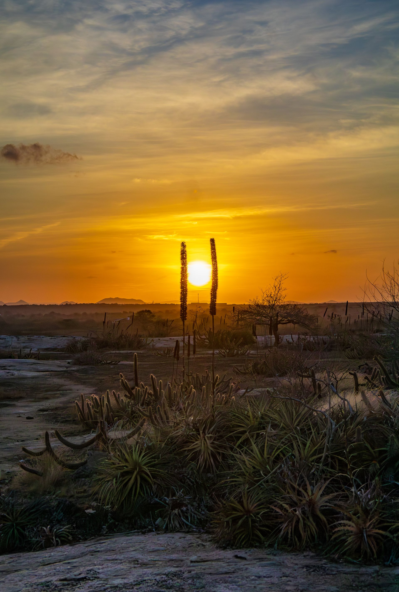
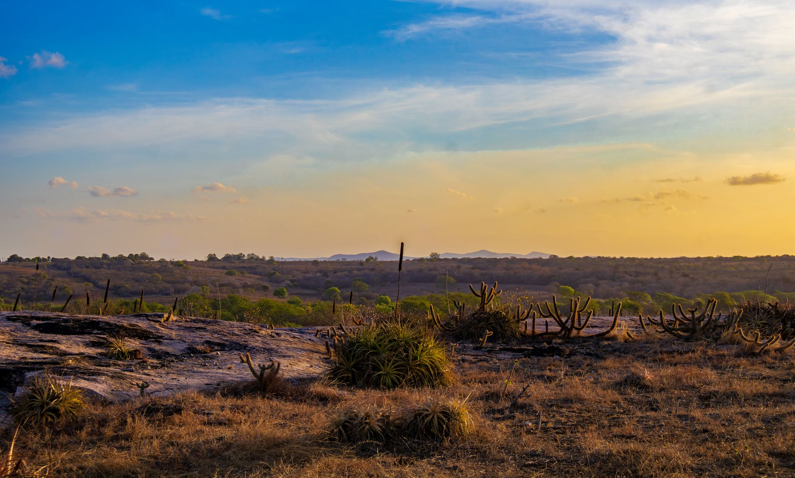
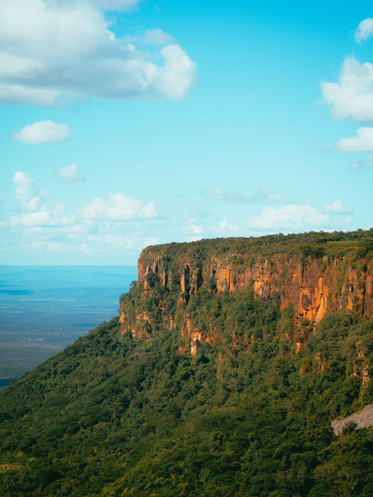
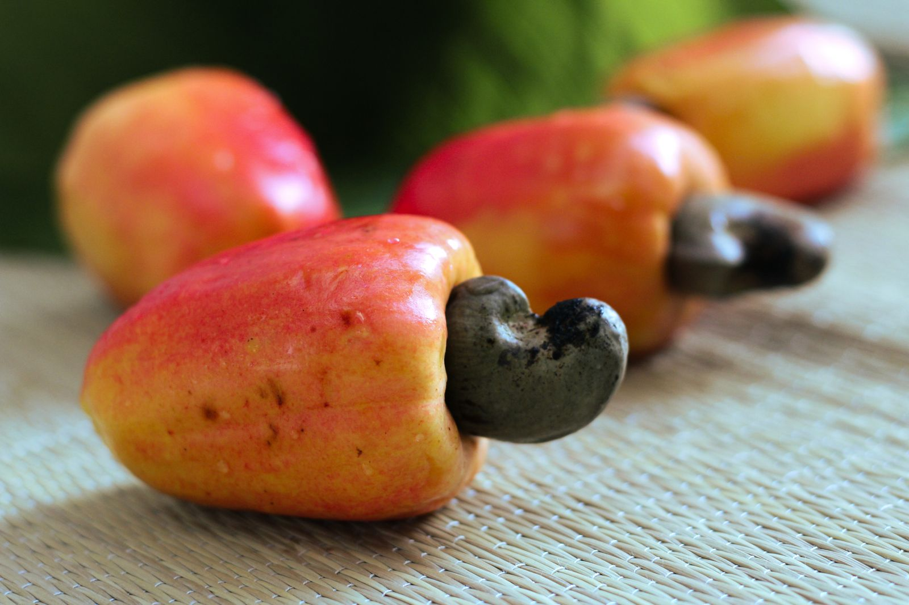
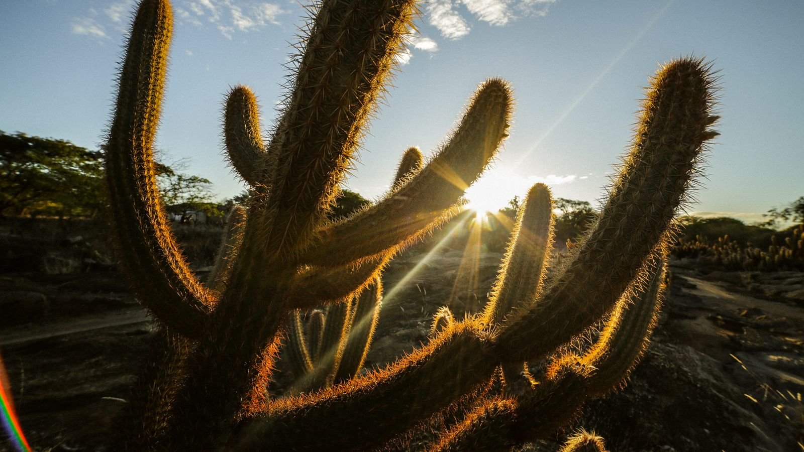
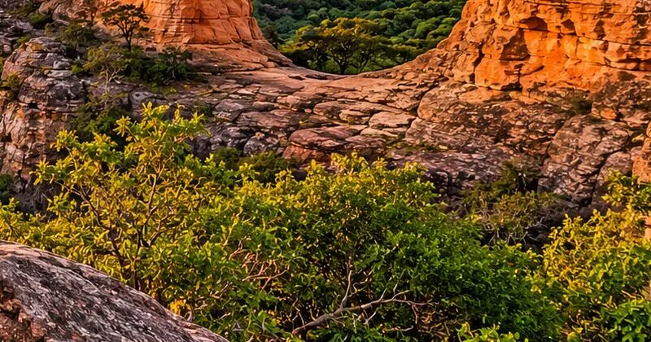
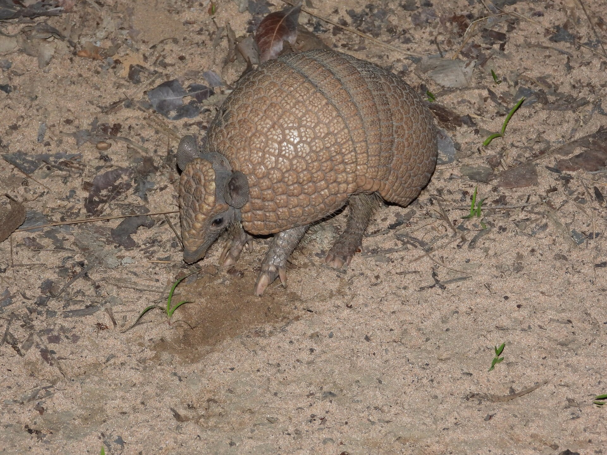
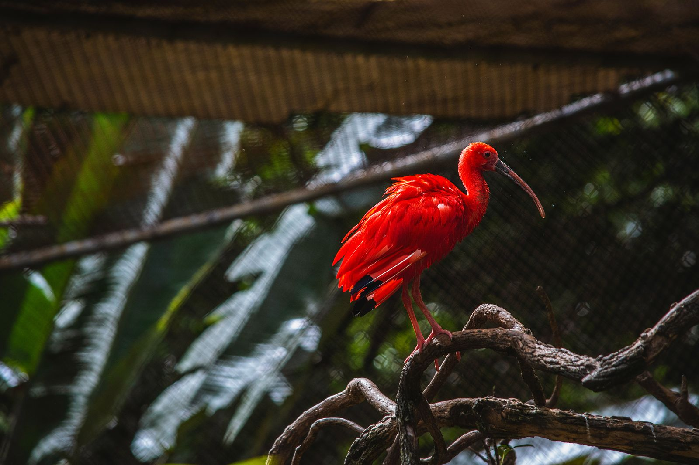
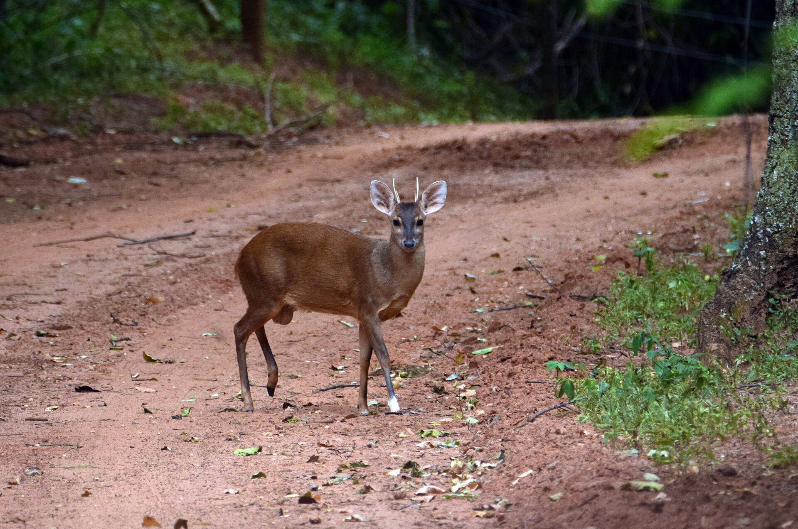
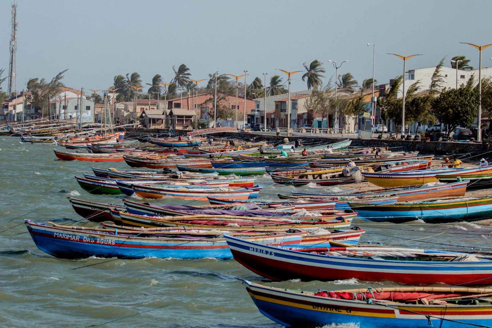

Fotos do Piauí
Paisagens






Plantas





Animais







Cidades e cultura



Créditos: a foto do topo do Início, o mandacaru e a vegetação de cerrado vêm da foto enviada pelo autor do projeto. Paisagens — Pexels: Pôr do sol na caatinga e Céu do sertão (Arison Silvino), Vale da Serra da Capivara (Lindos Horizontes), Mirante do Gritador (Gustavo Cordeiro); Wikimedia Commons: Pedra Furada (Artur Warchavchik, CC BY-SA 3.0). Fotos do Pexels: Porto de Parnaíba (Fuka jaz), Caju (Nanda Mends), Cacto da caatinga (Leonardo Dourado), Teresina (Fernanda Quaresma). Fotos do Wikimedia Commons: Carnaúbas (Rapper Ouriço, domínio público), Sete Cidades (deltafrut, licença CC BY 2.0). Animais — Pexels: Onça-pintada (adrian vieriu), Guará (Jerson Martins), Peixe-boi-marinho (Koji Kamei). Wikimedia Commons: Tatu-bola (Reuber Brandão, CC BY 4.0), Mocó (Thomaz de Carvalho Callado, CC BY 4.0), Veado-catingueiro (Miguelrangeljr, CC BY-SA 4.0).